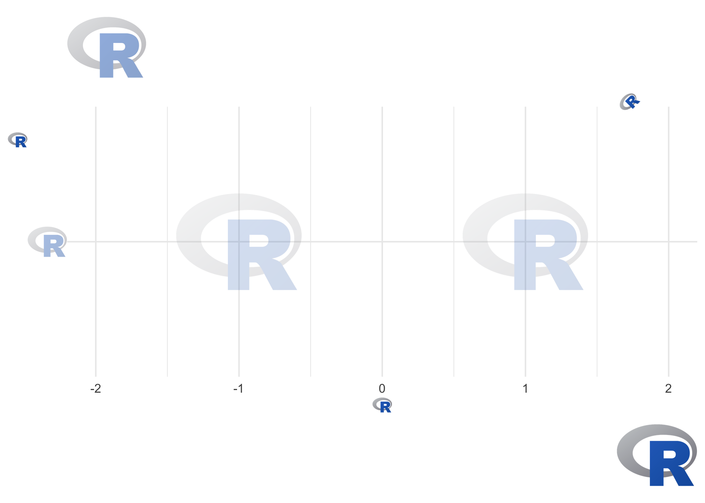
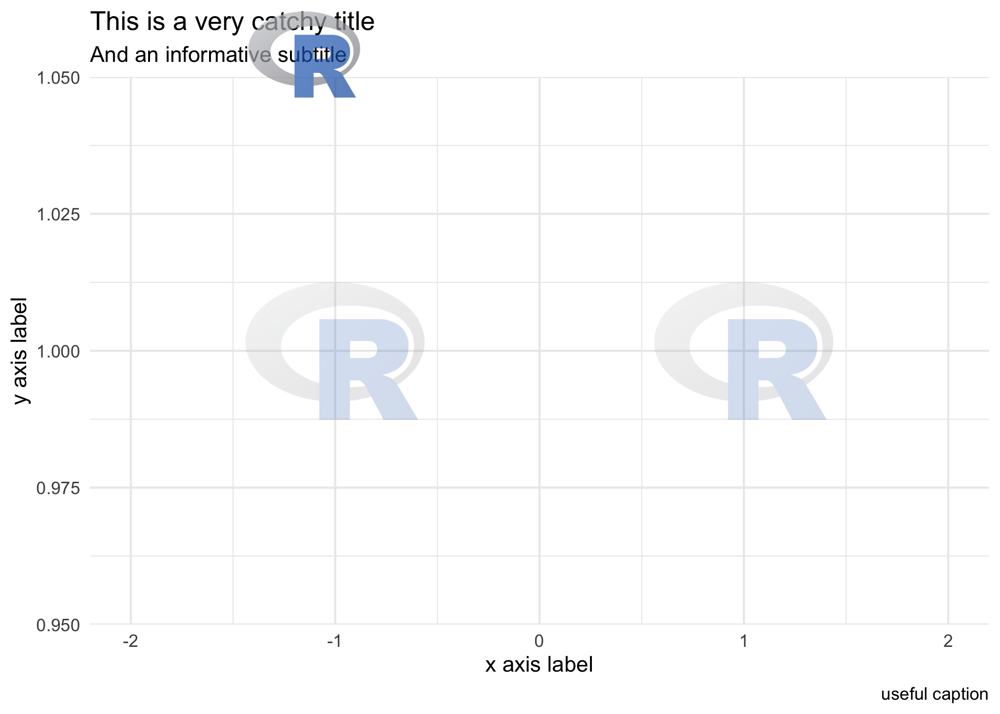

ggpath is a ‘ggplot2’ extension that enables robust image grobs in panels and theme elements. This means it helps plotting images (from local paths, from urls or from raw image data) in nearly every part of a ggplot.
Installation
The easiest way to get ggpath is to install it from CRAN with:
install.packages("ggpath")To get a bug fix or to use a feature from the development version, you can install the development version of ggpath from GitHub, for example with:
if (!require("pak")) install.packages("pak")
pak::pkg_install("mrcaseb/ggpath")Examples
The two main features to provide images in a ggplot are a geom (geom_from_path()) and theme elements (element_path() & element_raster()). All of them replace image urls, local image paths, or raw image data with the actual image. And to improve performance, the images are cached locally.
The below examples use local image files that are shipped with the package. Let’s locate the images first.
local_r_logo <- system.file("r_logo.png", package = "ggpath")
local_background_image <- system.file("example_bg.jpg", package = "ggpath")Image Geom
Now, we can make a simple plot, where we use the logo image like a point by replacing the local path with the actual image.
library(ggplot2)
library(ggpath)
plot_data <- data.frame(x = c(-1, 1), y = 1, path = local_r_logo)
ggplot(plot_data, aes(x = x, y = y)) +
geom_from_path(aes(path = path), width = 0.2) +
coord_cartesian(xlim = c(-2, 2)) +
theme_minimal()
Images in Theme Elements (element_path)
We can build on top of that by adding new axis labels, axis titles, plot title and subtitle, or a caption and using a ggpath theme element. Note the usage of transparency with the alpha argument, the justification with the hjust/vjust arguments, or the rotation with the angle argument.
ggplot(plot_data, aes(x = x, y = local_r_logo)) +
geom_from_path(aes(path = path), width = 0.2, alpha = 0.2) +
coord_cartesian(xlim = c(-2, 2)) +
theme_minimal() +
labs(
title = local_r_logo,
subtitle = local_r_logo,
x = local_r_logo,
y = local_r_logo,
caption = local_r_logo
) +
theme(
plot.caption = element_path(hjust = 1, size = 0.6),
axis.text.y = element_path(size = 1),
axis.title.x = element_path(),
axis.title.y = element_path(vjust = 0.9),
plot.title = element_path(hjust = 0, size = 2, alpha = 0.5),
plot.subtitle = element_path(hjust = 0.9, angle = 45),
)
A popular way to personalize a plot is to include a logo in the title area. As shown above, we can replace the title or subtitle with an image but not combine it with text. So if we want a title, a subtitle and still a logo in the title area, we can use the ggplot2 tag, which is actually used to implement figure numbering.
ggplot(plot_data, aes(x = x, y = 1)) +
geom_from_path(aes(path = path), width = 0.2, alpha = 0.2) +
coord_cartesian(xlim = c(-2, 2)) +
theme_minimal() +
labs(
title = "This is a very catchy title",
subtitle = "And an informative subtitle",
x = "x axis label",
y = "y axis label",
caption = "useful caption",
tag = local_r_logo
) +
theme(
plot.tag = element_path(size = 2, vjust = 1, alpha = 0.7),
plot.tag.position = c(0.3,1),
)
Please note how to place the image in the whole plot area via plot.tag.position. So in combination with alpha you can place a logo also behind title and subtitle.
Images in Theme Elements (element_raster)
The second theme element, element_raster(), allows rendering of images in the plot background. It is a replacement for ggplot2::element_rect(). In the following example, we plot the two logos again and now set a sample background. The sample background is a photo by Dan Cristian Pădureț on Unsplash.
ggplot(plot_data, aes(x = x, y = y)) +
geom_from_path(aes(path = path), width = 0.2) +
coord_cartesian(xlim = c(-2, 2)) +
theme_dark() +
theme(
plot.background = element_raster(local_background_image),
panel.background = element_rect(fill = "transparent")
)Some notes on the plot and the general behaviour
- We remove the panel background to be able to see the plot background by setting it’s
fillparameter to “transparent”. -
element_raster()defaults to plot the image to 100% of the plot width and height (grid::unit(1, "npc")). This means that it might change the aspect ratio of the image if it doesn’t equal the aspect ratio of the actual plot. -
element_raster()defaults to plot the image exactly in the middle of the plot (grid::unit(0.5, "npc")combined withjust = "centre"). This means you can move around the image if you set it’s size bigger than the plot, e.g. withheight = grid::unit(2, "npc"). Seehelp("unit", "grid")for further information.
ggpath Options
The option "ggpath.cache" can be used to configure the package cache. It can be set with
options(ggpath.cache = "memory")
# or
options(ggpath.cache = "filesystem")
# or
options(ggpath.cache = "off")The default - "memory" - caches in the current session, while "filesystem" caches on disk which means that the cache is available after starting a fresh session. All cache options time out after 24 hours.
Comparison with Similar Image-Plotting Packages
There are various ggplot2 extensions that provide similar functionality in terms of plotting images. These include but not limited to
ggpath combines the strengths of all of the above by providing
- functions to plot images in both the panel (with
geom_from_path) and all other plot areas (withelement_path&element_raster), - robust image aspect ratio,
- options for changing the color of images including a grayscale transformation,
- options for applying transparency, and
- improved performance through image caching.
There are some downsides compared to the above mentioned packages, e.g.
- cannot combine images and text to a grob as ggtext can with
element_markdown, - cannot modify css parts of svgs as ggsvg can.